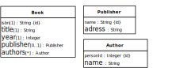
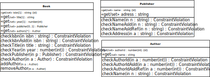

Our starting point for making a JS class model is the following OO class model:
|  |
This model contains, in addition to the single-valued reference
property Book::publisher representing the
unidirectional many-to-one association Book-has-Publisher,
the multi-valued reference property
Book::authors representing the unidirectional
many-to-many association Books-have-Authors.
For deriving a JS class model from the OO class model we have to
follow the same steps as in Section 2 and, in addition, we have to take care of
multi-valued reference properties, such as
Book::authors, for which we
create a class-level check operation, such as
checkAuthor, which is responsible for checking the
corresponding referential integrity
constraint for the references to be added to the property's
collection;
create an add operation, such
as addAuthor, for adding a reference to the
collection;
create a remove operation, such
as removeAuthor, for removing a reference from the
collection.
This leads to the following JS class model:
|  |